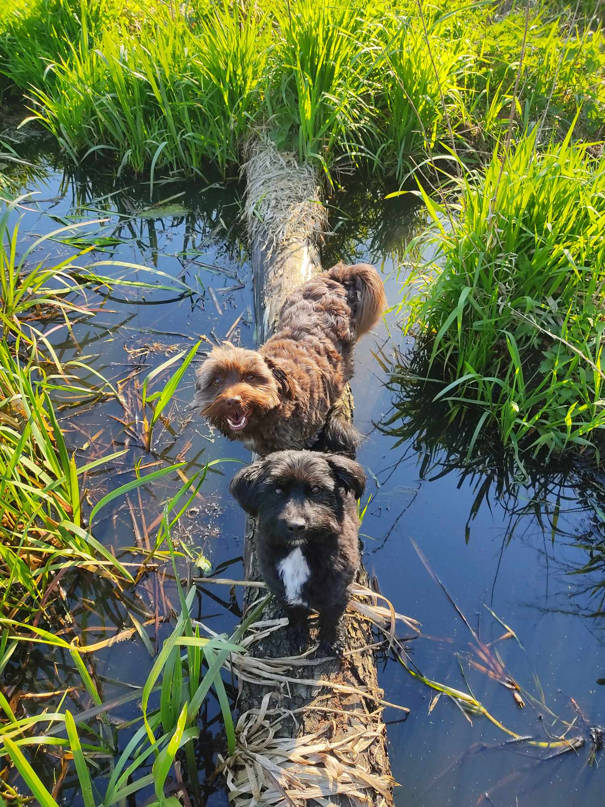

Cześć, Jestem Zosia.
Mam 23 lata. Urodziłam się w Warszawie i tam mieszkałam przez pierwszy rok życia. Potem rok mieszkałam z rodzicami u babci w Mińsku Mazowieckim. W międzyczasie rodzice wybudowali dom w Bykowiznie i tam następnie mieszkałam 10 lat. Tam też urodziła się większość mojego rodzeństwa. W wieku 12 lat razem z rodzicami i rodzeństwem wyprowadziliśmy się do Zamościa. Tam po trzech miesiącach od wyprowadzki urodziła się moja najmłodsza siostra. Teraz jest nas po równo. Tata i trzech chłopców oraz mama i trzy dziewczyny. Pięć lat po wyprowadzce do Zamościa wyprowadziłam się od rodziny i wróciłam do babci do Mińska.
Przez całe swoje życie byłam w 6 różnych szkołach. W klasach 0-2 chodziłam do żeńskiej szkoły Strumienie, należącej do unii Sternik, w Warszawie. Z racji, że nigdy nie dogadywałam się z dziewczynami bo były według mnie nudne, to po trzech latach udało mi się wyprosić rodziców o przeniesienie do szkoły z chłopcami. Wtedy trafiłam do Salezjan w Mińsku Mazowieckim i chodziłam tam aż do wyprowadzki do Zamościa. W Zamościu 6 klasę skończyłam w SP3 Zamość, po czym chodziłam do gimnazjum nr 3 w Zamościu. Poszłam do 1 klasy liceum na profil geograficzno - matematyczny, ale po pierwszym roku przeprowadziłam się do babci i zmieniłam wtedy szkołę na technikum, profil weterynaryjny. Tam też napisałam maturę. Aktualnie studiuję Pedagogikę na Uniwersytecie w Siedlcach.
Moje zainteresowania.
Od zawsze kręciły się wokół natury, przyrody. Mam dużą wiedzę zwłaszcza o wszelkich zwierzętach, mniejszą o roślinach i grzybach. W swoim życiu miałam długo związek z terrarystyką. Miałam także zarejestrowaną hodowlę świnek morskich. Aktualnie posiadam jedynie trzy psy i kota, którym prowadzę stronę na Facebooku. Do moich zainteresowań kilka lat temu dołączyła też edukacja seksualna. Do tego stopnia, że zastanawiam się nad pójściem po pedagogice na studia podyplomowe o seksuologii. Jakbym miała wymienić, to aktualnie moimi zajęciami w wolnym czasie są :
- szukanie skamielin i ciekawych minerałów/kamieni
- szukanie zrzutów i czaszek zwierząt
- polskie grzyby, rośliny, zwierzęta
- pomaganie ludziom z zakresu edukacji seksualnej
- Pole Dance
- prowadzenie mojej strony
- hodowla i sprzedaż roślin kolekcjonerskich

(Na zdjęciu Rubin i Szafir)
Moje wady:
- łatwo wpadam w smutek
- potrafię płakać z byle powodu
- często coś powiem, a potem dopiero pomyślę
- jestem nadodpowiedzialna
- jestem bałaganiarą (Według innych. Dla mnie to jest wystarczający porządek)
- jestem leniwa
- łatwo się poddaję
- jaja mnie sfemdzoł
- mam niską samoocenę
- nie umiem o siebie walczyć
Moje zalety:
- lubię pomagać ludziom
- dbam by innym było dobrze i byli szczęśliwi
- jestem uparta
- jestem inteligentna
- mam dużą wiedzę
- jestem sprytna i zaradna
- jestem empatyczna
- jestem wrażliwa
- nie lubię cierpienia innych
- jestem pomysłowa
I na koniec parę ciekawostek.
Bardzo lubię gotować, piec i spędzać czas w kuchni, ale wolę robić jedzenie dla innych niż dla siebie.
Moimi ulubionymi są wszelkie dania z makaronem i pizza, także chyba najbardziej lubię kuchnię włoską.
Moim ulubionym kolorem jest niebieski, ale bardzo też lubię wszystko co mieni się i opalizuje tęczowo/benzynowo.
Nie mam ulubionego typu muzyki. Słucham tych piosenek, które akurat wpadną mi w ucho (jestem raczej wybredna) i nie ograniczam się do danego gatunku